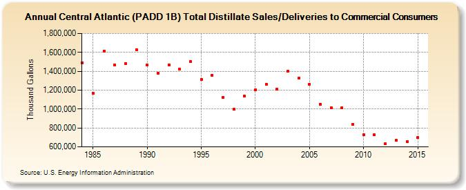

|
|||||
|  | |||||
| Central Atlantic (PADD 1B) Total Distillate Sales/Deliveries to Commercial Consumers (Thousand Gallons) | |||||
| Decade | Year-0 | Year-1 | Year-2 | Year-3 | Year-4 | Year-5 | Year-6 | Year-7 | Year-8 | Year-9 |
|---|---|---|---|---|---|---|---|---|---|---|
| 1980's | 1,490,867 | 1,170,222 | 1,615,278 | 1,467,506 | 1,480,067 | 1,630,541 | ||||
| 1990's | 1,462,992 | 1,379,380 | 1,469,289 | 1,420,308 | 1,500,060 | 1,312,577 | 1,357,941 | 1,125,748 | 998,535 | 1,139,322 |
| 2000's | 1,203,992 | 1,261,439 | 1,210,999 | 1,401,364 | 1,326,940 | 1,264,768 | 1,053,273 | 1,014,960 | 1,013,141 | 839,545 |
| 2010's | 725,332 | 727,755 | 634,029 | 668,457 | 658,531 | 698,429 |
| - = No Data Reported; -- = Not Applicable; NA = Not Available; W = Withheld to avoid disclosure of individual company data. |
| Release Date: 12/5/2016 |
| Next Release Date: Last Week of November 2017 |